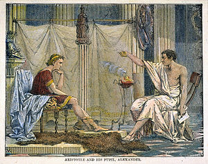
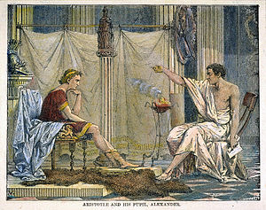

Aristóteles era natural de Estagira, na Trácia, sendo filho de Nicômaco, amigo e médico pessoal do rei macedônio Amintas III, pai de Filipe II. É provável que o interesse de Aristóteles por biologia e fisiologia decorra da atividade médica exercida pelo pai e pelo tio, e que remontava há dez gerações.
Segundo a compilação bizantina Suda, Aristóteles era descendente de Nicômaco, filho de Macaão, filho de Esculápio.
Com cerca de 16 ou 17 anos partiu para a cidade de Atenas, maior centro intelectual e artístico da Grécia Antiga. Como muitos outros jovens da época, foi para lá prosseguir os estudos. Duas grandes instituições disputavam a preferência dos jovens: a escola de Isócrates, que visava preparar o aluno para a vida política, e Platão e sua Academia, com preferência à ciência (episteme) como fundamento da realidade. Apesar do aviso de que, quem não conhecesse geometria ali não deveria entrar, Aristóteles decidiu-se pela academia platônica e nela permaneceu vinte anos, até a morte de Platão, no primeiro ano da 108a olimpíada (348 a.C.). Aristóteles provavelmente participou dos Mistérios de Eleusis.
 
